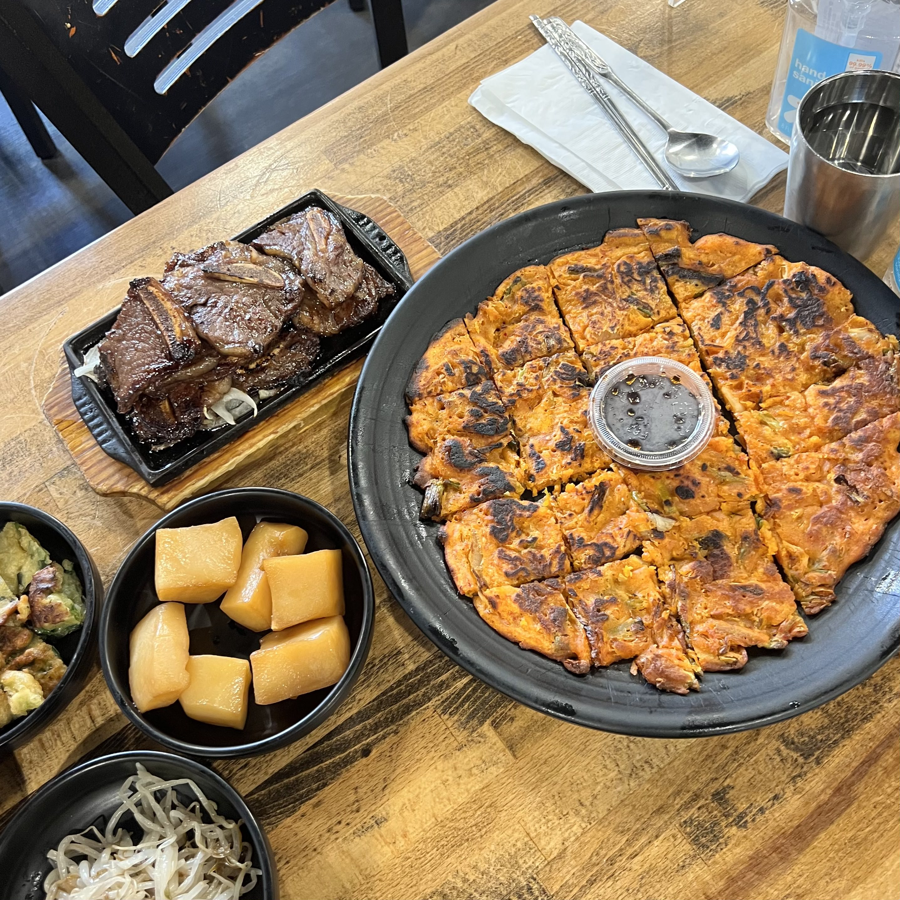
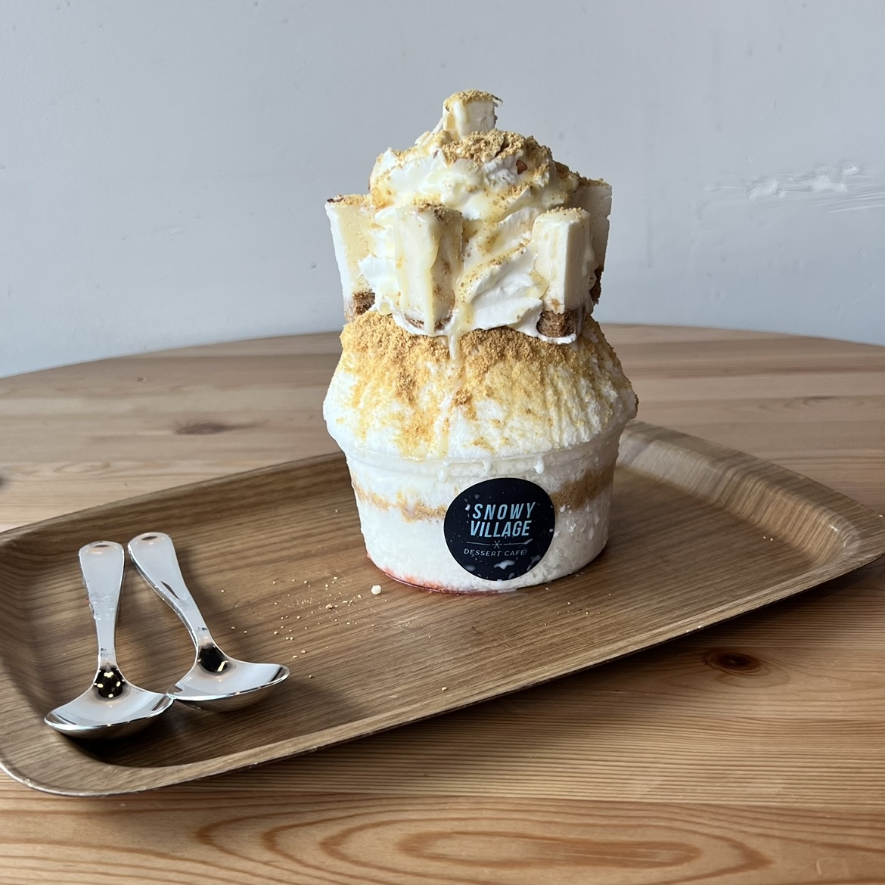
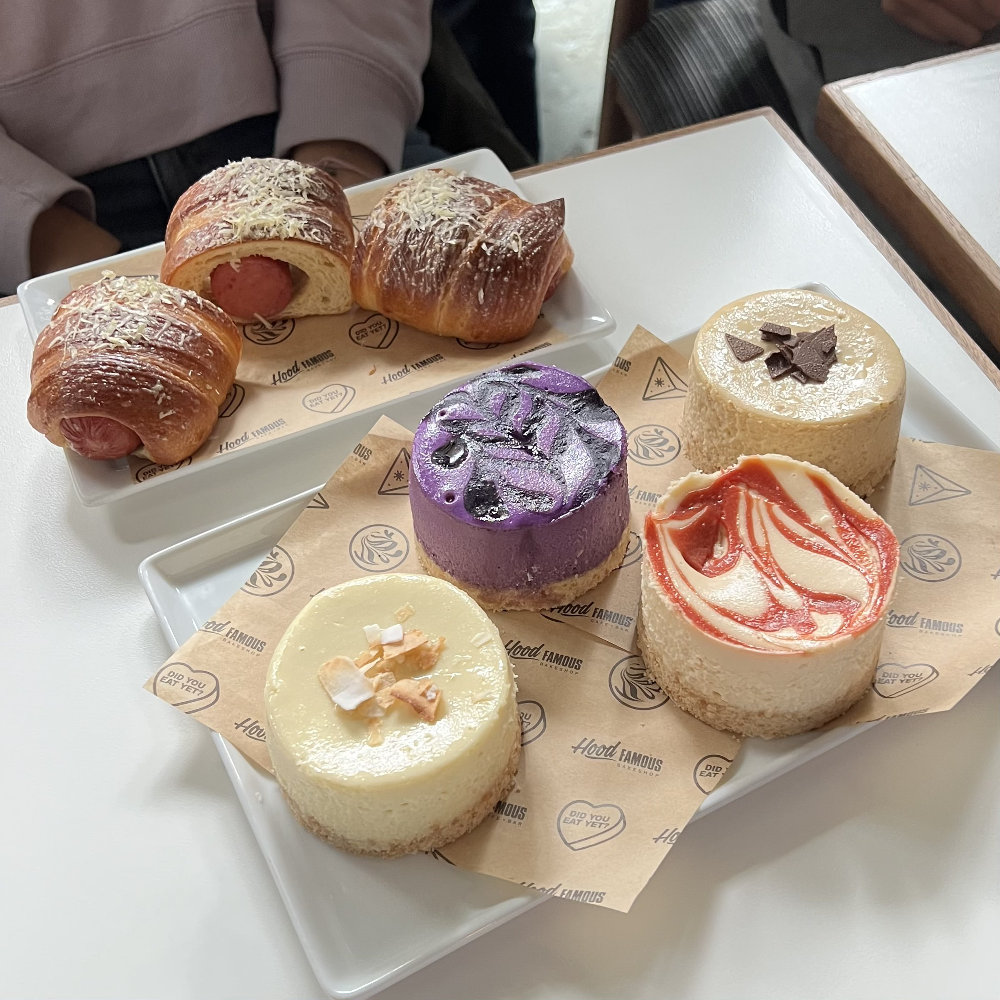
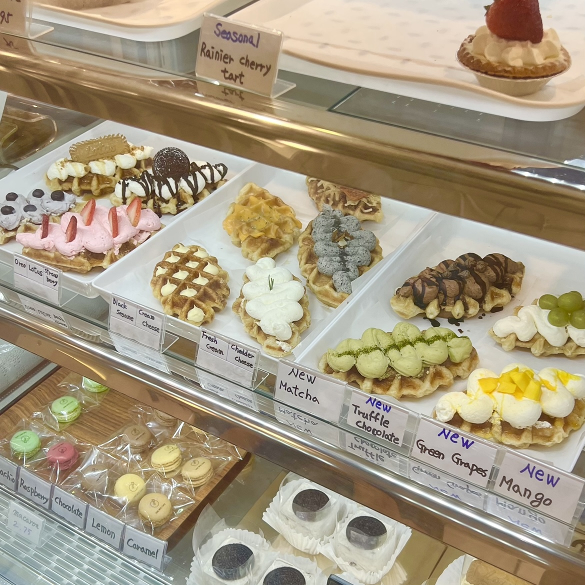
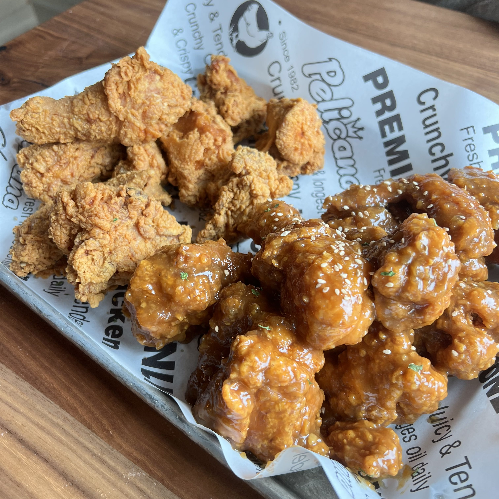
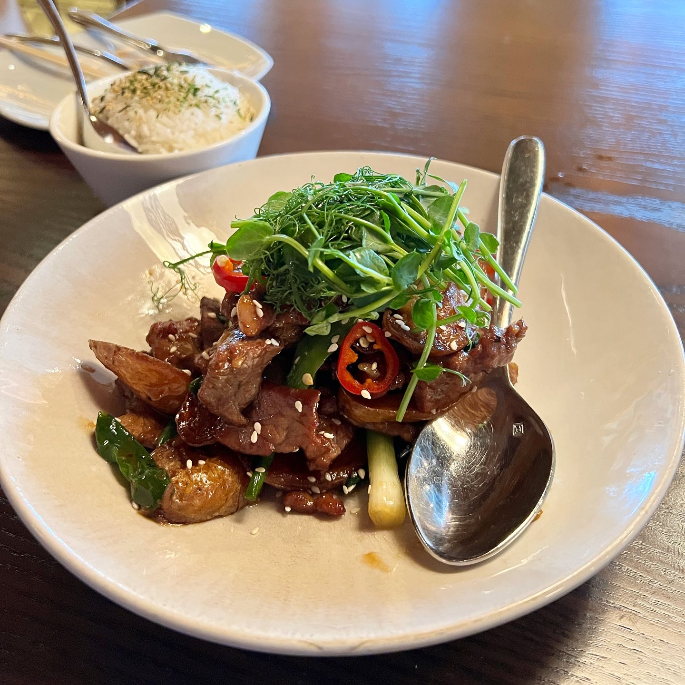

Korean Tofu House
Korean Tofu House is an authentic Korean Restaurant located in the University of Washington area "University District". This restaurant has great portions for the price, with probably the best Korean food I've had in the past several years!
Snowy Village
Snowy Village is a Korean-style shaved ice dessert shop located in the University of Washington area "University District". This cafe has a variety of shaved ice options! A unique different here is that the shaved ice is not actually from ice, but from frozen milk, so every spoon is full of savory taste!
Hood Famous Bakery
Hood Famous Bakery is a Filipino-inspired bakery located in International District, Seattle. This bakery has a variety of pastries, and the cafe turns into a bar at night! With different types of lattes and pastries, our favorite was the variety cheesecake (pictured left).
One Bite Cafe
One Bite Cafe is a Korean cafe located in Roosevelt, Seattle. Conveniently located right by the train station, it is a newly opened shop. Their speciality is croffles, but they also have a variety of different desserts such as cheesecakes, macarons, and tarts.
Pelicana
Pelicana is a Korean Fried Chicken chain that is popular on the West Coast. This chain was located in Capitol Hill, Seattle, WA. While the chicken and the atmosphere of the restaurant was appealing, there was not much flavor or meat on the chicken (mostly bone) :( and was quite pricey.
Juju Durham
Juju Durham is an Asian fusion restaurant located in Durham, NC by the Duke University campus. The setting is very fancy with the food presentation being immaculate! The dishes (the one pictured here is the steak stir fry) was full of flavor and spices. The rice that was accompanied also had some great furikake for seasoning.
The department this class is a part of is the School of Information and Library Science at UNC-Chapel Hill.